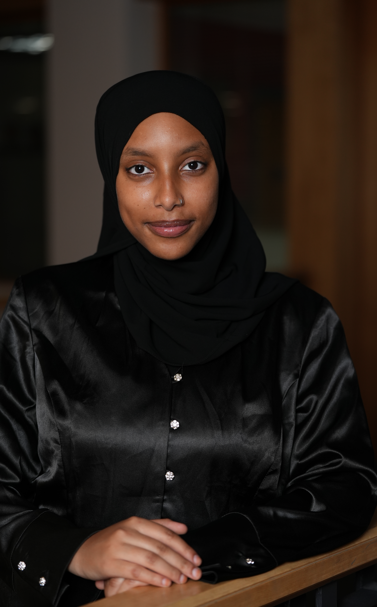

Meet the team!
Ehesane Nida

Hello! My name is Ehesane Nida. I am a second-year business student at UMD interested in the Information Systems track. I contributed to the website development and html application as well as assumed leadership responsibilities in project management and delegation.
Monu Sunkara
Hi! My name is Monu Sunkara and I am a first-year Computer Science student at UMD. I have coded some personal projects in the past, and this is my first time doing one with a team! As the head developer of the team, I was in charge of coding the functionalities of our website and overseeing all code.
Ashley Tchokote
My name is Ashley Tchokote and I am a 2nd year student majoring in Computer Engineering. I am proficient in Java, Python, HTML, and CSS. During this project, I mostly focused on the front end and worked with CSS and HTML, allowing me to refresh that skillset.
Ruba Ibrahim
Hi, my name is Ruba Ibrahim and I am a second-year Information Science student with a passion for UX design and human-computer interaction. My love for social innovation made RateMyPath a particularly fulfilling initiative, where I designed the project infrastructure framework through defining our logistical scope and conducting user-centric research.
Edgar U. Lizardo
Hi my name is Edgar U. I am an Infodesign major and I helped with the project by creating the design of the logo and app concept.